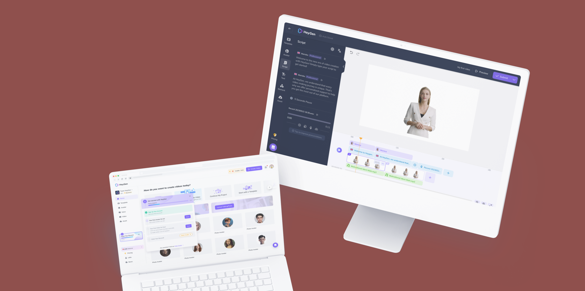
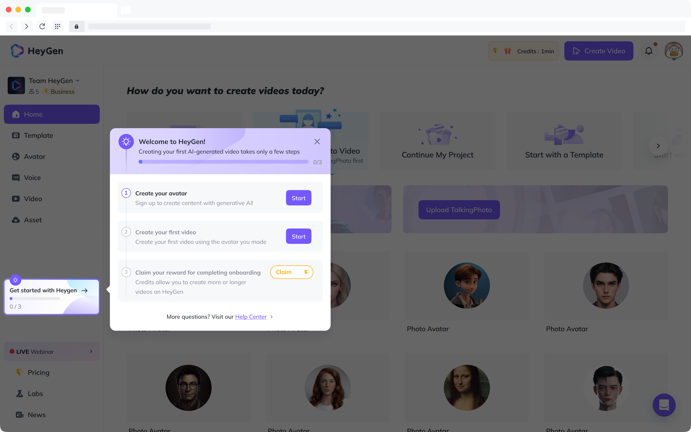

AI Video Editor Revamp & Mobile MVP
Project
Heygen
Year
2023
Scope of Work
B2B | AI Tool l Design Revamp l 0-1 MVP Design l Design System l Scrum l Sprint I PRD
Work Type
2023 Heygen Product Design Internship
In 2023, Heygen, as a video generation company, has witnessed its Annual Recurring Revenue (ARR) skyrocket from zero to 18 million in the AIGC market, with a lean team of just 25 employees.Like many rapidly expanding startups, Heygen recognizes the necessity of a comprehensive overhaul of its product to adapt to the ever-evolving demands of its customers.
Final application
Over the course of 6 months, I worked on a series of experiences for Heygen's product. This included building desktop, mobile, PRDs and a design system that supports all it. My work focused on improving and revamping existing UX workflows and features through close collaboration with the product and development teams to meet our rapidly-growing customer needs.

Editor Revamp



Market growth has exceeded the previous product scope
Our customer base has grown and matured beyond the initial scope of our product. As a result, the product needs to be modified to better meet the evolving needs and expectations of our customers. In 2022, Heygen exclusively catered to customers requiring avatar-based video solutions. However, by 2024, our customer base has diversified to include small studios, individual creators, and businesses of all sizes.

Adapting to diverse customer needs
The growth highlights the necessity for product adaptation to meet the evolving needs of a broader and more varied clients. Understanding the customer journey and interaction touchpoints, we are tailoring solutions that drive continued growth and enhance customer satisfaction in the evolving context.

Adapting to rapid growth
Therefore, Heygen's rapid growth has pushed our work beyond traditional boundaries. Designers now create interfaces and take on roles as product researchers and managers. This empowers us, as product designers, to respond swiftly and efficiently to the constantly evolving needs of our users.

How might we empower users to effortlessly create and manage videos on HeyGen’s platform, making the experience enjoyable and efficient for everyone, from beginners to experts?
Context
Design Goal: Redefine the Video Editor Structure to support the diversity of Video creation.
Heygen provides two main services: creating AI avatars and turning audio into videos. In the past, Heygen tried to integrate every interaction within one page to minimize the learning burden. However, as the market is envolving, this is has become a problem for professional users who want to make more complex and creative videos.

Competitive Analysis
To gain a comprehensive baseline understanding of the market landscape for video editing tools, I conducted an extensive competitive analysis of 7 existing tools in the market. This analysis involved evaluating each tool's features, structure, user interface, and suitability for various video editing needs, allowing me to identify strengths, weaknesses, and unique selling points across the industry.

Interviews
To better achieve our objective, we conduct 3 rounds of semi-structured interviews with 24 clients to gain deeper insights into customer experiences and needs. Our plan includes gathering perspectives from both users and businesses. Additionally, 328 individuals completed a survey.
Here are the process and findings:


Conclusion
Although this solution was successful before ChatGPT's release, the market growth has accelerated rapidly with ChatGPT's introduction. AI technology is evolving, offering more support, and more professionals are choosing AI video software. This solution is now proved to be totally outdated and urgently needs a systematic revamp to match the experience of more professional video editing apps.
Design Sprint
Due to the uncertainty in project details and scope, the involved departments struggled to reach a consensus initially. As the sole designer in this project, I found myself caught in a continual tug-of-war due to differing interpretations across departments. To address this, I proposed a design sprint to unify the teams' objectives. Our primary goal was to align the opinions of all members in the product and design teams, establishing a common foundation.

Information Architecture
Before, during, and after the design sprint, I led the iterative process for the project, focusing on two key feature updates: the Script Panel and the Timeline Editor. My primary objective was to redesign the information architecture of the page to improve the worfklow of video creation.

Iterations
(layout)
To revamp the layout, I decided to move the Text-to-Speech (Script) functions into the sidebar, enhancing its visibility and priority. This approach ensured that TTS maintained a high level of attention and usability, while also providing a large display space for its features. The changes were designed to be minimal yet impactful, ensuring a smooth transition and high continuity for existing users.

Iterations
(component)
After deciding on Plan 2.1, we continued to experiment with the detailed visual components and their related functions to ensure the redesign would meet our goals. The rationale behind selecting this plan was to enhance user experience by improving the visibility and usability of core features, specifically the TTS functions. We aimed to create a more intuitive and coherent interface that aligned with standard software layout patterns, reducing the learning curve for users.

Iterations (design system)
The initial design shows promise, but improvements are needed for the learning curve of new Timeline panel features and the accessibility of essential functions like Text-to-Speech (Script). I've created a concise style guide for component interactions to clarify the vision for our development team.
Here are the three key conclusions that guided my design:
- Clearly define the boundaries between the different operation panels. Use the contrast of white and dark modes to differentiate the various sections of the page.
- All elements are single-attribute, operable, and cannot be subdivided. There should be no automatic dependencies or bindings between elements.
- Repeated elements across the timeline, script, and canvas panels should be synchronized to provide a consistent user experience. For example, when a user interacts with a photo in the timeline panel, the same element should visually indicate the interaction in the canvas panel.

Usability Testing
We conducted comprehensive client interviews with 6 agencies and 4 individual creators to gather valuable insights and feedback on our product. The primary goal of these interviews was to test various aspects of the features I developed, focusing on clarity, usability, completion, and most importantly comprehension.


Final Design
After usability testing, the final design was refined to enhance clarity with stronger visual cues for different states and optimized text display for better readability. Putting everything together, I created an AI-powered video editing experience that truly captivates our users.
"... It's getting so much more professional... This is gonna be a total game-changer for us! Now we can create high-quality videos way more efficiently without spending a fortune on hiring professional video makers."
- One of our users, who runs a small business in the housing market

Design for dev
During development, we focused on improving interaction details in edge cases and workflows through detailed discussions with product managers and engineers. Given our limited resources, we updated our design while ensuring every improvement is incremental, manageable, and verifiable. This approach allows us to optimize iterations while minimizing development costs.

Serendipity
There was also an interesting reversal story about the playbar design. Initially, we discontinued the play bar design to simplify the interface. However, after usability testing and encountering development challenges, we ultimately readopted it. This unexpected turnaround highlighted the importance of flexibility and responsiveness in design, demonstrating that sometimes, initial ideas can prove essential despite early setbacks.

Reflection
This project was intense. I worked not only on UIUX designs but also several research, evaluation and testing sessions with both internal colleagues and external clients. While there were lots of moving parts, I learned how to balance efficiency and process in a fast-paced environment.
Context
Design Goal:
Translate the desktop-based Avatar Recording feature into an MVP for an ios App.
Heygen's growth relies on its easy-to-use, high-quality Avatar service. However, our avatar generation is limited by being desktop-only, and many users have poor-quality desktop cameras. To improve avatar quality and attract more customers, we proposed a mobile version to leverage the high-quality cameras on smartphones. This could accelerate customer growth and open new business opportunities.
In this project, which is also the last project that I worked in Heygen during my intership, I took the initiative as a designer, researcher, and product manager, working closely with the product team to develop the project from initial concept to mid-fidelity prototypes in a 3-week timeline.

Context
Design Goal:
Translate the desktop-based Avatar Recording feature into an MVP for an ios App.
Heygen's growth relies on its easy-to-use, high-quality Avatar service. However, our avatar generation is limited by being desktop-only, and many users have poor-quality desktop cameras. To improve avatar quality and attract more customers, we proposed a mobile version to leverage the high-quality cameras on smartphones. This could accelerate customer growth and open new business opportunities.
In this project, I took the initiative as a designer, researcher, and product manager, working closely with the product team to develop the project from initial concept to mid-fidelity prototypes in a 3-week timeline.
Research
Recognizing that our customers may have additional expectations, we have conducted a series of compatitive analysis to gain a deeper understanding of their needs and preferences for the mobile version, as well as the current market landscape of AI-powered video app.

Goal
I began by analyzing our customer base, which provided a solid foundation for the product scope discussions with the CPO and design and product teams. During these meetings, we brainstormed various solutions and identified specific user needs. By applying the Jobs to Be Done (JTBD) theory, we were able to organize and prioritize these needs, ensuring our product development efforts aligned with the key tasks our users aim to accomplish.

Scope
To better address our upcoming requirements, we have strategically organized our goals into two distinct categories based on timeline. This approach has clarified our priorities and streamline our processes. Based on the goals, the MVP design should be inherently simple and intuitive, sufficiently lean, with enough flexibility in its information architecture and detailed interactions.

Prototyping
Given that the planned MVP for the mobile app builds on existing UX workflows, transitioning from a desktop platform to a mobile environment involves detailed and challenging efforts. Focusing on the 3 crucial functions — Management, Recording, and Consent — I quickly created an 84-page mid-fidelity prototype within 7 days. This process requires meticulous planning and careful execution to ensure all functionalities are adapted to mobile user habits.

Metrics
After the prototype, I come up with a set of initial metrics for PMs according to funnel theory meticulously track user engagement across their whole journey through the mobile app. These metrics aim to provide a progressive understanding to drive sustained product iterations.

Afterstory
Ultimately, after sharing the prototype with numerous users and conducting preliminary validations, the feedback was positive. However, compared to Heygen's other rapidly growing services, we found this project lacking in terms of product-market fit and potential growth impact. As a result, the project was indefinitely postponed. Despite this, the project was not just a culmination of my work, but also a reflection of everything I learned and excelled at in this successful product-led growth startup. As an entry-level UX designer, it marked significant growth in my skills and confidence.
Gratitude
Although this was meant to be an internship, I worked more like a junior UX designer with a mentor at Heygen. My fast pace of work led to a hybrid role, combining UX design and product management. Amid the many moving parts, I learned to adapt to various aspects of UX design.
As a growing UX designer in a startup environment, I embraced agile methodologies to keep up with the fast pace. This involved focusing on rapid prototyping and maintaining clear communication with the team. This strategy allowed us to swiftly gather user feedback and make necessary iterations.
Despite the rapid pace, I ensured a user-centric approach, prioritizing the product's usability and relevance. In such a dynamic setting, it's crucial for UX designers like myself to deliver quickly while continuously adapting and learning. This ongoing process not only enhances the product but also hones my professional skills through regular feedback and revisions.